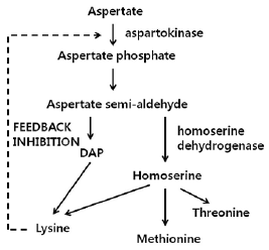
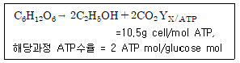
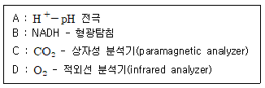
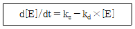
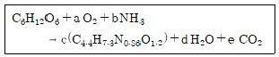
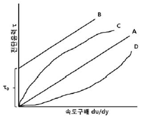

바이오화학제품제조기사 (2012-05-20 기출문제)
1과목: 미생물공학
1. 고체배양(solid culture)에 대한 설명으로 적합한 것은?
- 혐기성 미생물의 배양에 적합하다.
- 곰팡이 배양에 많이 이용된다.
- 제어배양이 용이하다.
- 대규모 생산시에 비교적 좁은 면적이 필요하므로 유리하다.
(정답률: 76%)

2. 미생물균주의 장기보존에 동결건조(freezedrying 혹은 lyophilization)방법이 많이 쓰인다. 동결건조에 대한 설명으로 옳은 것은?
- 동결배양액에서 물을 제거하여 미생물을 보존하는 방법이다.
- 동결 전후 미생물의 생존율은 거의 변하지 않는다.
- 동결과정에 사용하는 미생물 보존재는 일반적으로 배양배지와 동일하다.
- 반드시 액체질소에 넣어 보존하여야 한다.
(정답률: 93%)
3. 도면과 같은 대사과정을 참조하여 균주가 lysine을 대량 생성케하는(overproduction) 전략으로 적합하지 않은 것은?

- 유전자 조작에 의하여 Homoserine dehydrogenase가 균체 내에 생성되지 못하게 한다.
- Methionine과 threonine을 첨가하여 저농도로 유지한다.
- 기질인 aspartate를 서서히 공급한다.
- Aspartokinase의 활성이 lysine에 의하여 저해되지 않는 변이주를 제조한다.
(정답률: 84%)
4. 다음 중 가장 낮은 수분 활성도에서 자랄 수 있는 미생물은?
- Saccharomyces cerevisiae
- Aspergillus niger
- Bacillus subtilis
- Zygosaccharomyces rouxii
(정답률: 66%)
5. 진균류가 생산하는 유기산이 아닌 것은?
- 구연산(citric acid)
- 코지산(kojic acid)
- 지베렐산(gibberellic acid)
- 젖산(lactic acid)
(정답률: 72%)
6. 산업적으로 구연산(citric acid)을 발효 생산할 때 주로 이용되는 미생물은?
- 대장균
- 방선균
- Sacchromyces cerevisiae 효모
- 곰팡이
(정답률: 74%)
7. Frame shift 란 DNA 배열 상에 몇 개의 nucleotide 가 삽입되면 생기는지 가장 옳게 설명한 것은?
- 1개만 삽입되어야 생긴다.
- 2개만 삽입되어야 생긴다.
- 3개만 삽입되어야 생긴다.
- 1개 또는 2개가 삽입되어야 생긴다.
(정답률: 90%)
8. 포도당을 과당으로 전환하는 이성화효소는?
- 알파 아밀라아제(α-amylase)
- 글루코 아밀라아제(gluco amylase)
- 베타 아밀라아제(β-amylase)
- 글루코스 이소머라제(glucose isomerase)
(정답률: 84%)
9. Bacillus 속에 의한 α-amylase 의 생산에 대한 설명으로 옳은 것은?
- 질소원에 의해서 catabolite repression이 야기 되지 않는다.
- 포자가 형성된 수에 α-amylase 생산이 증가한다.
- 배양배지에 전분을 가하면 α-amylase의 생산이 감소한다.
- α-amylase 생산의 최적 온도는 약 30℃ 전후이다.
(정답률: 87%)
10. 방향족 아미노산이 아닌 것은?
- 트립토판(tryptophan)
- 타이로신(tyrosine)
- 페닐알라닌(phenylalanine)
- 라이신(lysine)
(정답률: 100%)
11. 회분 배양에 대한 설명으로 옳은 것은?
- 미생물 배양 도중 계속적으로 배지를 공급한다.
- 미생물 배양시 배지 내의 성분이 일정하게 유지된다.
- 배양시간 경과에 따라 미생물의 성장속도에 차이가 나타난다.
- 미생물 배양의 생산성이 가장 높다.
(정답률: 75%)
12. Lactobacillus delbruekii 는 어떤 조건하에서 헤테로젖산발효(hetero-fermentative lactic acid production)를 한다고 알려져 있다. 공급된 포도당이 모두 젖산발효에만 사용된다고 했을 때, 100g의 포도당으로부터 생산될 것으로 기대되는 젖산의 양은 얼마인가? (단, 포도당의 분자량은 180, 젖산의 분자량은 90이다.)
- 190g
- 100g
- 50g
- 40g
(정답률: 82%)
13. 미생물 발효를 통해 산업적으로 생산되고 있는 비타민은?
- 리보플라빈(riboflavin)
- 알파토코페롤(alpha-tocopherol)
- 아스코르빈산(L-ascorbic acid)
- 바이오틴(biotin)
(정답률: 73%)
14. 중합효소연쇄반응(polymerase chain reaction, PCR)을 이용하여 어떤 DNA 1분자를 복제하는데 1분이 걸린다. DNA 1분자를 4분 동안 복제하면 몇 개의 분자가 되겠는가?
- 4
- 8
- 16
- 32
(정답률: 91%)
15. 다음은 Clarke 와 Carbon의 식이다. 인간 β-hemoglobin의 유전자의 크기는 1.5kb이고, 인간 반수체(haploid) 게놈은 3x106 일 때 재조합 형질전 환주에서 99%의 확률로 최소한 하나 이상의 β-hemoglobin 유전자가 나타나려면 서로 다른 1.5kb짜리 제한절편을 몇 개 clone해야 하는가? 
(단, N : 목적유전가가 클론된 형질전환주를 알기 위해 필요한 전제 재조합 형질 전환주(recombinant transformant)의 수, P : 재조합주에 원하는 유전자가 들어갈 확률, f : 총 게놈 크기에 대한 제한절편(restiction fragment) 크기의 비이다.)
- 4.4 x 106
- 9.2 x 106
- 1.⑤ x 107
- 2.23 x 107
(정답률: 56%)
16. 기본 분자구조와 그에 따른 유사한 효능에 따라 분류할 때, 현재 사용되고 있는 항생물질 그룹이 아닌 것은?
- Macrolide계
- PAH계
- Aminoglycoside계
- β-lactam계
(정답률: 91%)
17. 산업적 미생물발효에 기질로 쓰이는 당밀은 무슨 산업의 부산물로 얻어지는가?
- 대두유 산업
- 설탕 산업
- 맥주 산업
- 유가공 산업
(정답률: 83%)
18. 현재 발효에 의하여 생산되고 있는 항생제 중에서 가장 많은 종류의 항생제 생산에 이용되고 있는 미생물은?
- 대장균
- 방선균
- 효모
- 곰팡이
(정답률: 70%)
19. 극미량이 필요하나 미생물 스스로가 합성할 수 없는 세포구성에 필요한 유기화합물은?
- 탄수화물
- 미량원소
- 성장인자(growth factor)
- 단백질
(정답률: 76%)
20. 효소의 공업적 생산을 위하여 농산물을 배지 원료로 사용하려 한다. 질소원으로 사용되는 것은?
- 설탕
- 전분
- 밀가루
- Corn steep liquor
(정답률: 100%)
2과목: 배양공학
21. 주로 토양에서 서식하며 균사형태로 자라는 미생물은?
- 고초균
- 대장균
- 방선균
- 빵효모
(정답률: 97%)
22. 동물세포가 전단응력(shear stress)에 매우 민감한 이유는?
- 원형질 막(plasma membrane)으로만 둘러싸여 있기 때문
- 약한 세포벽 때문
- 액포(vacuole)가 크기 때문
- 구형 또는 타원형이기 때문
(정답률: 81%)
23. 미생물 배양에 관한 양론을 나타내는 파라미터 설명으로 틀린 것은?
- YMX/ATP 은 ATP 1몰당 생합성되는 바이오매스의 질량을 나타내는 ATP 수율계수이다.
- RQ란 소비된 산소 1몰당 생성된 CO2의 몰수를 나타내며 호흡율이라고 한다.
- P/O비는 산소 분자 1몰에서 생성되는 고에너지 인산결합 몰수로 보통 1보다 작다.
- H/O비는 소비된 산소 1몰당 방출되는 H+ 이온의 몰수로 보통 4이다.
(정답률: 87%)
24. 균체의 건조중량이 0.5g/L 인 배양액을 3시간 배양한 후 측정하니 균체의 건조중량이 4.0g/L가 되었다. 이 균체의 Doubling time은?
- 0.2h
- 0.5h
- 1.0h
- 1.5h
(정답률: 68%)
25. 회분식 세포 배양의 성장형태(growth phase)에 서 새로운 환경에 적응하는 기간은?
- 지연기(lag phase)
- 지수 성장기(exponential phase)
- 정지기(stationary phase)
- 쇠퇴기(decline phase)
(정답률: 91%)
26. 식물세포 배양으로 생산되는 물질은?
- Taxol, Shikonin
- Penicillin, Cephalosporin
- Kojic acid, Indolacetic acid
- Hydroxyalanine, DOPA
(정답률: 87%)
27. 미생물의 증식은 지체기, 대수기, 정지기 등으로 구분되어 진다. 대수기 배양액 내의 세포 양을세포의 숫자로 정의할 때 세포양을 정량화하기 위한 변수로 사용할 수 없는 것은?
- DNA 양
- 세포 단백질양
- 산소소모 속도
- 세포벽의 양
(정답률: 85%)
28. 2개 이상의 폴리펩타이드를 갖는 단백질만이 갖는 구조로 폴리펩타이드간의 상호작용에 의해 결정되는 단백질 구조에 해당하는 것은?
- 1차구조
- 2차구조
- 3차구조
- 4차구조
(정답률: 89%)
29. 재조합 단백질을 생산할 때 숙주로 미생물인 대장균을 사용할 경우의 장점에 해당하는 것은?
- 대부분의 목적 단백질이 세포 밖으로 배출된다.
- 목적 단백질이 내포체를 이루는 경우가 거의 없다.
- 생장속도가 빠르고, 고농도 배양이 가능하다.
- 고농도 축적에도 열 충격 반응을 유발하지 않는다.
(정답률: 96%)
30. 다음 원소 중 cytochrome, ferredoxin 등에 있으며 전자전달체 구성 그리고 효소의 보조 인자로 사용되는 원소는?
- 철
- 나트룸
- 마그네슘
- 칼슘
(정답률: 86%)
31. 재조합 대장균으로부터 외래단백질이 생산될 때 종종 융합 단백질의 형태로 생산되는 경우가 많은데이 융합 단백질 생산 시스템의 주된 이용 목적이 아닌 것은?
- 독성(toxic) 단백질의 안정적 발현
- 아미노 말단 메티오닌(methionine) 잔기의 완벽한 처리
- 불필요한 2차 대사산물의 생성억제
- 페리플라즘(periplasm) 구간으로의 단백질 분비
(정답률: 57%)
32. 배양하려는 미생물에 대한 정확한 생육인자(growth factor)를 모르거나 다양한 생육인자를 요구하는 경우에 배지에 첨가하는 성분으로 적합한 것은?
- 아미노산(amino acid)
- 비타민(vitamins)
- 효모 엑기스(yeast extract)
- 포도당(glucose)
(정답률: 83%)
33. 무생의 잘 용해된 배양액 중의 세포밀도를 측정하기 위해 광도계(Spectrophotometer)를 이용하였다. 다음 중 세포밀도 측정에 가장 적당한 파장은?
- 360nm
- 450Å
- 660nm
- 560Å
(정답률: 93%)
34. 일반적인 경우 산물의 비생성속도와 비생장속도와의 관계에 따른 산물의 생성 양식과 산물의 예로 가장 거리가 먼 것은?
- 생장관련산물(growth-associated product): 에탄올, 해당과정 효소들
- 부분생장관련산물(partially growth-associated product) : 프로테아제, 유당분해효소
- 생장관련산물(growth-associated product): 이산화탄소, ATP
- 비생장관련산물(nongrowth-associated product) : 항생제, 색소
(정답률: 72%)
35. 누룩곰팡이(Aspergilus)와 푸른곰팡이(Penicillium)의 외부적인 형태의 차이점을 가장 옳게 설명한 것은?
- 누룩곰팡이는 경자가 있으나. 푸른곰팡이는 경자가 없다.
- 누룩곰팡이는 단륜생, 다륜생이 있고 푸른곰팡이는 정낭이 없다.
- 누룩곰팡이는 포자가 있으나 푸른곰팡이는 무포자 생식을 한다.
- 누룩곰팡이는 정낭에 분생포자가 있으며 푸른곰팡이는 정낭이 없고 경자 윗부분에 포자를 형성한다.
(정답률: 75%)
36. S. cerevisiae 에 의한 에탄올 발효에 있어서 이론적인 성장수율(YX/S)과 산물수율계수(YP/S)는?

- YX/S = 0.09, YP/S = 0.51
- YX/S = 0.12, YP/S = 0.51
- YX/S = 0.49, YP/S = 0.26
- YX/S = 0.49, YP/S = 0.51
(정답률: 47%)
37. 포도당은 세포질 내에서 해당 작용을 거쳐 피루브산이 된다, 해당 작용은 여러 종류의 중간산물로 이루어지는데 이에 속하지 않는 화합물은?
- 글루코오스-6-인산
- 글루코오스-1-인산
- 포스포에놀피루베이트
- 글리세르알데히드-3-인산
(정답률: 88%)
38. 미생물의 배양 시 pH 조절 및 질소원으로 사용되는 물질은?
- 암모니아
- 수산화칼슘
- 수산화나트륨
- 포도당
(정답률: 95%)
39. 최근 발효 후 발효폐액의 처리 및 환경오염문제를 해결하기 위해 제한배지(defined medium)를 사용한다. 이 배지에 포함되는 영양성분이 아닌 것은?
- 포도당
- Peptone
- KH2PO4
- (NH4)2SO4
(정답률: 80%)
40. 고박테리아(archaebacteria)와 진정세균(eubacteria)사이에 차이점이 없다고 여겨지는 부분은?
- 세포벽 구성성분
- rRNA 서열
- 단백질 생합성 기구
- 세포막 지질 조성
(정답률: 58%)
3과목: 생물반응공학
41. 생물반응기의 대규모화에 따른 문제점에 관한 내용으로 틀린 것은?
- 발효기의 높이 대 지름비가 일정하게 대규모화되면, 부피에 대한 표면적비가 상당히 감소한다.
- 기하학적 유사성이 유지되더라도 대규모화하면 물리적 조건이 작은 반응기의 조건과 같아질 수 없다.
- 큰 반응기의 경우 종균배양 시간이 더 길어짐으로써 작은 반응기에 비해 미생물의 변이가 빨리촉진된다.
- 벽면생장(Wall growth)하는 미생물의 경우, 작은 반응기에서 얻은 데이터로서는 큰 반응기에서의 비양 특성을 알 수 없다.
(정답률: 50%)
42. 유가식 배양에 관련된 내용 중 틀린 것은?
- 기질이 연속적으로 공급된다.
- 기질이 반연속적으로 공급된다.
- 세포의 비성장속도가 일정하게 유지된다.
- 기질저해를 극복할 수 있다.
(정답률: 67%)
43. 효소고정화를 위한 담체의 재질 중 고정화 형태가 다른 것은?
- Ca-alginate
- k-carrkgeenan
- Activiated carbon
- Polyvinyl alcohol
(정답률: 76%)
44. 연속식 발효는 회분식 발효에 비해 생산성은 높으나 최종 농도는 낮다. 반면 유가배양식(fed-batch)은 높은 최종 농도를 얻을 수 있다. 다음 중 아주 높은 생산성과 상당히 높은 최종 농도를 얻을 수 있는 생물 반응기는?
- 세포 재순환 반응기
- 유가배양식
- 회분식
- 연속식
(정답률: 72%)
45. 구형 다공성 담체 내에 고정화 시킨 효소를 이용하여 유용 물질을 생산하고자 할 때, 대부분의 경우 담체 내부의 물질 확산 저항으로 인해 효소의 반응속도가 감소된다. 이 경우 반응속도를 높이기 위한 반응으로서 적절하지 않은 것은?
- 가능한 한 반경이 작은 담체를 사용한다.
- 교반 속도를 증가시킨다.
- 기질 농도를 높인다.
- 가능한 한 효소의 양을 줄인다.
(정답률: 94%)
46. 세포를 고정화함으로써 기대되는 장점으로 불수 없는 것은?
- 세포를 단위부피당 고농도로 배양할 수 있다.
- 세포의 재사용이 가능하다.
- 연속에서 세출(wash-out)현상을 극복할 수 있다.
- 목적 산물이 세포내 축적물질일 경우 더욱 유리하다.
(정답률: 85%)
47. 반응용액의 pH가 8에서 효소반응 속도가 최대인 효소를 표면에 음이온기를 가지고 있는 고체입자에 흡착 시켰을 경우 효소반응속도가 최대가 되기위한 반응용액의 pH는?
- 기질의 농도에 따라서 변한다.
- 8 보다 크다.
- 8 보다 작다
- 8
(정답률: 75%)
48. 농도를 측정할 수 있는 성분과 측정기술이 옳게 연결된 것을 모두 나열한 것은?

- A
- B
- A, B
- A, B, C, D
(정답률: 92%)
49. 기체의 멸균을 위해서 균일하고 작은 구멍이 있는 막을 사용해 체질(sieving)효과를 이용하는 것은?
- 증기멸균기
- 크로마토그래피멸균기
- 표면여과기
- 흡착멸균기
(정답률: 86%)
50. 재순환이 있는 키모스탯(Chemostat)에 관련된 내용 중 옳지 않은 것은?
- 세포 농도가 일반 키모스탯에서 얻어지는 세포 농도보다 더 높다.
- 유출액에 포함되어 있는 세포는 원심분리, 여과등으로 재순환 된다.
- 세포의 생산성이 높아진다.
- 기질 농도가 일반적인 키모스탯에서 얻어지는 기질 농도보다 더 높다.
(정답률: 65%)
51. 효소반응 속도식은 어떻게 얻을 수 있는가?
- 효소의 활성화에너지를 측정함으로써
- 효소반응시 관여하는 ATP 농도를 측정함으로써
- 효소반응으로 인한 단백질 3차 구조의 변화를 측정함으로써
- 효소반응에 의해 생성되는 생성물의 생성율을 측정함으로써
(정답률: 90%)
52. 발효에 과한 설명 중 틀린 것은?
- 용존 산소의 농도에 의한 성장제한을 극복하기 위해 쓰이는 배양 방법 중의 하나로 압력을 높여서 운전하는 것이 있다.
- 발효배지의 산화환원 전위는 질소를 통과시켜 높일 수 있다.
- 아황산염 방법에 의한 부피전달계수 kL·a를 결정할 때, 황산염의 형성속도는 산소 소모속도에 비례한다.
- 발효배지의 이온세기는 특정영양소의 세포내외의 전달, 세포의 대사 기능에 영향을 미친다.
(정답률: 87%)
53. 초기 액상 부피가 1L인 생물반응기에 고동도의 포도당을 시간당 0.5L로 주입하는 유가식 배양을 통해 2시간 후에 50g의 세포를 얻었다. 초기 세포농도는 무시할 만큼 작다고 가정한다면, 이 때 반응기에서의 세포의 농도는 몇 g/L 인가?
- 100
- 50
- 25
- 10
(정답률: 66%)
54. 교반식 연속반응기를 정상 상태에서 운전 할 때 미생물의 비성장속도상수를 변화시키는데 주로 사용하는 요인은?
- 반응기의 운전온도
- 반응기에 공급하는 기질의 농도
- 기질의 공급유량
- 반응기내의 초기 미생물의 농도
(정답률: 50%)
55. 효소의 활성도와 관련한 설명으로 옳은 것은?
- 효소는 금속촉매와 같이 고온에서 온도의 증가에 따라 활성이 증가하는 경향을 보인다.
- 효소의 활성은 용액의 pH가 증가할수록 활성도도 증가한다.
- 효소황성의 반감기는 반응온도가 증가할수록 길어진다.
- 효소활성에 대한 최적 pH와 최적 온도는 효소의 종류마다 다르다.
(정답률: 90%)
56. 세포 내 효소양의 변화율(d[E]/dt)은 다음과 같이 나타낼 수 있다. 정상상태 하에서 효소 합성 반응율 상수(ks)의 값이 2×10-5 mM/S 이라면, 효소의 농도가 0.1mM 일 때 효소 분해반응율 상수(kd)의 값은 얼마인가?

- 10-5s-1
- 2×10-4s-1
- 8.5mM/s
- 13.1mM/s
(정답률: 86%)
57. Scale-up시 자주 활용되는 인자로서 발효조를 80L 에서 104L 로 scale-up 할 경우 그 값이 변하지 않는 것은?
- 단위 용적당 투입 동력
- 총 산소 투입량
- 유체의 레이놀드 수
- 임펠러의 회전수
(정답률: 59%)
58. Lac operon 이 포함된 발현 벡터가 삽입되어 있는 대장균을 이용하여 β-galactosidase 를 생산하고자 한다. 유가식 배양을 하여 효소의 생산성을 최대한 높이고자 할 경우 유가식 배양기에 공급되는 배양액내의 기질 조성으로 옳은 것은?
- 초기에는 글루코즈 조성이 높은 배지를 공급하다 시간이 경과하면 락토즈의 조성이 높은 배지를 공급한다.
- 초기 글루코스의 조성이 낮은 배지를 공급하다, 시간이 경과함에따라 조성이 높은 배지를 공급한다.
- 초기 락토즈의 조성이 높은 배지를 공급하다, 시간이 경과함에 따라 조성이 낮은배지를 공급한다.
- 초기에는 락토즈의 조성이 높은 배지를 공급하다. 시간이 경과하면 글루코즈의 조성이 높은 배지를 공급한다.
(정답률: 80%)
59. 어느 특정 미생물에 대한 실험 측정 결과 기질탄소(포도당)의 2/3(wt) 다음식과 같이 바이오매스(biomass)로 전환하였다고 가정하였을 때 포도당의 양론 계수로 맞는 것은?

- a=1.473, b=0.782, c=0.909, d=3.854, e=2
- a=1.473, b=0.782, c=0.609, d=3.854, e=2
- a=1.473, b=0.682, c=0.909, d=2.854, e=2
- a=1.573, b=0.782, c=0.909, d=2.854, e=2
(정답률: 76%)
60. 비경쟁적(non-competitive) 저해 반응을 옳게 설명한 것은?
- 기질의 효소 결합은 저해물질의 효소 결합에 영향을 미치지 않는다.
- 기질의 농도를 높여주면 이 저해반응을 극복할 수 있다.
- 높은 기질 농도 하에서 일어나는 기질 저해 반응 (substrate inhibition)이 대표적인 예이다.
- 저해 물질이 효소-기질 복합체에만 결합하고 효소와는 친화력이 없다.
(정답률: 56%)
4과목: 생물분리공학
61. 전기 투석에 관한 설명으로 옳지 않은 것은?
- 직접적으로 전류를 가하여 용액으로부터 전하를 띠는 분자를 분리하는데 사용되는 막분리 방법이다.
- 전해질의 농축에는 효과적이나 단백질의 농축에는 효과적이지 않다.
- 탈염공정에 효과적으로 사용할 수 있다.
- 투석보다 빠르고 효과적이다.
(정답률: 73%)
62. 발효생성물 정제 단계 중 결정화에 대한 설명으로 틀린 것은?
- 결정화는 열에 민감한 물질의 열변성을 최소로 하는 저온에서 운전한다.
- 고순도의 결정은 회분식 Nutsche 형태의 여과기 또는 원심분리기로 회수한다.
- 결정의 특성과 크기는 세척속도에 영향을 미친다.
- 운전은 저농도에서 이루어지므로 분리인자가 낮다.
(정답률: 83%)
63. 생물분리공정에 있어서 생산물의 일반적 특성으로 가장 적합한 것은?
- 묽은 농도로 전재한다.
- 모두 친수성 물질이다.
- 열에 강한 특성이 있다.
- 불순물이 포함되어 있지 않다.
(정답률: 91%)
64. lysozyme을 이용한 세포파쇄에 대한 설명으로 옳지 않은 것은?
- 배양할 때 페니실린을 소량 첨가하면 lysozyme에 의한 세포파쇄가 용이해 진다.
- 그람음성 박테리아가 그람양성 박테리아보다 용이하게 파쇄 된다.
- lysozyme은 세포벽 내부의 β-1,4-glycosidic 결합의 가수분해반응을 촉진시키는 역할을 한다.
- 효모를 파쇄 할 경우 lysozyme 단독으로보다는다른 분해효소와의 혼합 효소 시스템을 종종 이용한다.
(정답률: 84%)
65. 생성물질의 추출공정에 쓰이는 일반적인 유기용매와 비교한 초임계유체의 장점으로 가장 거리가 먼 것은?
- 확산도가 높다.
- 점도가 낮다.
- 표면장력이 낮다.
- 분자량이 낮다.
(정답률: 60%)
66. 단백질을 젤(gel) 전기영동을 수행할 때 관찰되는 사항으로써 옳지 않은 것은?
- 단백질의 분자량이 작을수록 전기영동 이동도가 크다.
- 단백질의 등전점(pI)이 전기영동 pH 보다 낮으면 단백질은 음극으로 이동한다.
- 젤 전기영동은 단백질의 크기와 전하 차이에 의해 분리를 가능하게 한다.
- 전기영동 완충용액의 염(salt) 농도가 높으면 단백질 사이의 정전기적 상호작용이 억제되나 높은 전류에 의해 열 발생이 증가한다.
(정답률: 70%)
67. 막 여과 장치에 대한 설명으로 옳지 않은 것은?
- 미세여과막은 여과 멸균에 이용되기도 한다.
- 역삼투압막의 재질에는 polysulfone, cellulose acetate, polyamides가 있다.
- 역삼투압막은 용매로부터 이온 물질을 분리할때 사용할 수 있다.
- 한외여과막의 공극(pore)의 크기는 0.1~0.5 nm이다.
(정답률: 72%)
68. 1기압하에 있는 A 물질의 수용액에서 A의 몰분율이 0.01이고 이것과 평형에 있는 증기에서의 A의 몰분율이 0.2라고 할 때 물에 대한 A 물질의 휘발도 비는 약 얼마인가?
- 4.0
- 12.4
- 24.8
- 99.0
(정답률: 50%)
69. 다음 중 세포를 분리하는데 가장 널리 사용되는 분리방법은?
- 원심분리
- 추출
- 침전
- 역삼투
(정답률: 91%)
70. 세포외 생성물을 분리하는데 사용되는 주요 방법이 아닌 것은?
- 여과
- 원심분루
- 응고
- 파쇄
(정답률: 85%)
71. 미생물 nuclease의 정제공정 순서가 옳게 나열된 것은?
- 상등액 → 원심분리 → 흡착 → 투석 → 용출 → 농축 → Gel여과 → 희석 → 동결건조
- 상등액 → 희석 → 흡착 → 투석 → 용출 → Gel여과 → 농축 → 원심분리 → 동결건조
- 상등액 → 원심분리 → 흡착 → 용출 → 투석 → Gel여과 → 농축 → 희석 → 동결건조
- 상등액 → 희석 → 흡착 → 용출 → 투석 → 농축 → 원심분리 → Gel여과 → 동결건조
(정답률: 86%)
72. 결정화 공정에서의 population density 와 상관 관계가 있는 인자들로 이루어진 것은?
- 단위길이당 결정의 형태, 질량
- 단위면적당 결정의 길이, 시간
- 단위부피당 결정의 수, 길이
- 단위질량당결정의 면적, 시간
(정답률: 85%)
73. 한 단백질의 관형 크로마토그래피 용리에 있어 체류시간(retention time)과 피크너비(peak width)가 각각 24분 0.4분 일 때, 이 관의 이론단수( Number of Theoretical Unit)는?
- 576
- 5760
- 57600
- 576000
(정답률: 73%)
74. 침전 후 단백질을 분리하는 것과 같은 생물 분리에 주로 사용되고 있는 분리기술은?
- 막분리
- 증발
- 증류
- 흡수
(정답률: 85%)
75. A는 입자의 전하, B는 입자의 지름, C는 유체의 점도라고 할 때 전기영동시 전기장 내에서의 입자의 종단속도에 영향을 미치는 인자를 모두 나타낸 것은?
- A
- A, B
- A, C
- A, B, C
(정답률: 95%)
76. 다음 물질에 대한 설명 중 옳지 않은 것은?
- 셀룰로오스는 지구상에서 가장 일반적인 유기화합물이다.
- 단백질이 그 성질을 결정하는 입체배열은 분자의 자유에너지를 최소화하는 구조이다.
- 펩티도글리칸은 당류와 펩티드로 구성되어 있다.
- 미생물은 D-아미노산을 주로 생산한다.
(정답률: 84%)
77. 미생물 내에서 단백질 재접힘(refolding)시 영향을 미치는 주요인자로 가장 거리가 먼 것은?
- pH
- 용존산소농도
- 단백질 농도
- 당농도
(정답률: 69%)
78. 여과 공정에서 여과 속도를 높이기 위한 방법으로 가장 거리가 먼 것은?
- 점도를 낮춘다.
- 여과면적을 높인다.
- 압력을 증가 시킨다.
- 온도를 낮춘다.
(정답률: 87%)
79. 발효생산물질의 일반적인 특징이 아닌 것은?
- 발효액의 화학적 성질이 복잡하다.
- 생성물들은 높은 순도를 요구한다.
- 열에 민감하다.
- 진한 수용액으로 존재한다.
(정답률: 75%)
80. 용질분자와 지지입자 위에 결합되어 있는 리간드 사이의 특이한 화학적 상호작용에 따라 분리하는 방식은?
- 흡착크로마토그래피
- 이온교환크로마토그래피
- 젤여과크로마토그래피
- 친화성크로마토그래피
(정답률: 79%)
5과목: 생물공학개론
81. 번역(translation) 과정에 필요한 요소가 아닌 것은?
- tRNA
- 리보솜
- ATP와 같은 화학 에너지원
- RNA 중합효소
(정답률: 74%)
82. 제품표준서에 포함되어야 할 사항이 아닌 것은?
- 제품명, 제형 및 성상
- 허가연월일
- 시험결과를 관련 부서에 통지하는 방법
- 공정별 제조방법 및 공정검사방법
(정답률: 86%)
83. 그림에서 뉴턴 유체(Newtonian fluid)를 나타내는 것은?
- A
- B
- C
- D
(정답률: 68%)
84. 5.0 × 10-2M의 NaOH 수용액의 pOH와 pH를 구하면?
- 1.1, 12.7
- 1.1, 12.9
- 1.3, 12.7
- 1.3, 12.9
(정답률: 70%)
85. 기체크로마토그래피에 대한 설명 중 틀린 것은?
- 기체이거나 휘발성이 크며 열안정성이 좋은 시료를 분리하는데 사용된다.
- 이동상과 정지상이 모두 시료성분과 상호 작용을 하므로 분리 조건을 선택할 여지가 크다.
- 헬륨, 질소 등이 운반 기체로 사용된다.
- 기체-고체 및 기체 -액체 크로마토그래피가 있다.
(정답률: 74%)
86. 유전공학에서 일반적으로 사용되는 프로모터 종류에 해당하지 않는 것은?
- Constitutive
- Inducible
- Tissue-specific
- Disruptive
(정답률: 80%)
87. 10wt% NaCl 용액 100g에 20% NaCl 용액 적정량을 혼합하여 12wt% NaCl 용액을 만들었다. 만들어진 12% NaCl 용액에 들어있는 NaCl의 양은 몇 g 인가?
- 10
- 12
- 15
- 20
(정답률: 45%)
88. DNA 복제 및 전사 관련 효소 중 염색체 DNA의 초나선(supercoiled) 구조를 풀어서 covalentlyclosed-circular (공유결합 폐쇄현상) DNA의 형태를 변화시킬 수 있는 효소는?

- nuclease
- polymerase
- topoisomerases
- modifying enzyme
(정답률: 94%)
89. 중합효소 연쇄반응 (polymerase chanin reaction, PCR)에 사용하는 효소는?
- Telomerase
- Taq polymerase
- RNA polymerase
- Cre recombinase
(정답률: 92%)
90. GC(Gas Chromatography)의 장치에서 검출기에 해당하지 않는 것은?
- TCD(Thermal Conductivity Detector)
- RID(Refractive Index Detector)
- ECD(Electron Capture Detector)
- FID(Flame Ionization Detector)
(정답률: 68%)
91. 원핵생물 중 동물세포배양에 오염 문제를 일으키는 것은?
- Mycobacterium
- Mycoplasma
- Spirillium
- Staphylococcus
(정답률: 62%)
92. 전기영동에서 단백질 분자의 정전기적인 전하는 매체의 pH에 따라 달라지는데 이에 대한 설명 중 틀린 것은?
- pH = pI에서 전기영동속도는 0 이다.
- 단백질의 순전하에 따라 단백질의 이동속도가 결정된다.
- pH = pI에서 단백질의 순전하는0 이다.
- pH < pI일 때 단백질은 음전하를 띠게 된다.
(정답률: 82%)
93. 아미노산 중의 하나인 라이신은 1개의 카복실 그룹과 2개의 아미노그룹을 갖고 있으며, 각 그룹에 대한 pK는 각각 2.2, 9.0, 10.5 이다. 라이신의 pH는?
- 5.6
- 7.23
- 9.75
- 10.85
(정답률: 67%)
94. 1mol의 acetyl-CoA로부터 시작하여 TCA cycle을 도는 동안 3mol의 NADH + H+, 1mol의 FADH2, 1mol의 ATP가 생성된다. 이것은 결과적으로 몇 mol의 ATP 생성에 기여하는 셈이 되는가?
- 1
- 5
- 12
- 13
(정답률: 86%)
95. 세포내에서 발견되는 염색체와는 별개인 DNA분자로서 독립적인 복제 능력을 가지는 유전인자들의 집합체는?
- 클론(clone)
- 엑손(exon)
- 플라스미드(plasmid)
- 인트론(intron)
(정답률: 97%)
96. 역전사효소(reverse transcriptase)의 기능은?
- DNA를 주형으로 하여 RNA 합성
- RNA를 주형으로 하여 DNA 합성
- RNA를 주형으로 하여 단백질 합성
- DNA를 주형으로 하여 단백질 합성
(정답률: 83%)
97. 물질의 분자량을 확인 할 수 있는 Mass spectrometery는 fragmentation pattern으로 분자 구조 결정에 도움을 준다. 이온을 형성시키는데 사용하는 방법 중 전자와의 충돌로 일차 양이온 분자를 만들기 위해 메탄가스를 이용하는 방법은?
- Electron impact
- Chemical ionization
- Field ionization
- Atmospheric Pressure inonization
(정답률: 61%)
98. 절대압에 대한 설명으로 옳은 것은?
- 게이지로 측정한 압력
- 게이지압과 대기압의 곱
- 게이지압과 대기압의 합
- 절대 온도와 압력과의 합
(정답률: 85%)
99. 물속의 이온물질을 분석하는 장치이며 분석 원리는 분리관의 분리 능력에 따라 원하고자 하는 물질을 분석하는 것으로 주로 질산성질소, 불소이온, 황산이온, 염소이온 등을 분석하는 기기는 무엇인가?
- High Performance Liquid Chromatography
- Gas Chromatography
- Ion Chromatography
- Inductively Coupled Plasma Spectrophotometry
(정답률: 91%)
100. 퓨린계 염기와 피리미딘계 염기로 또는 피리미딘계 염기가 퓨린계 염기로 바뀌는 것을 나타내는 돌연변이는?
- 염기전위(transition)
- 염기변위(transversion)
- 염기구조이동
- 염색체변이
(정답률: 87%)